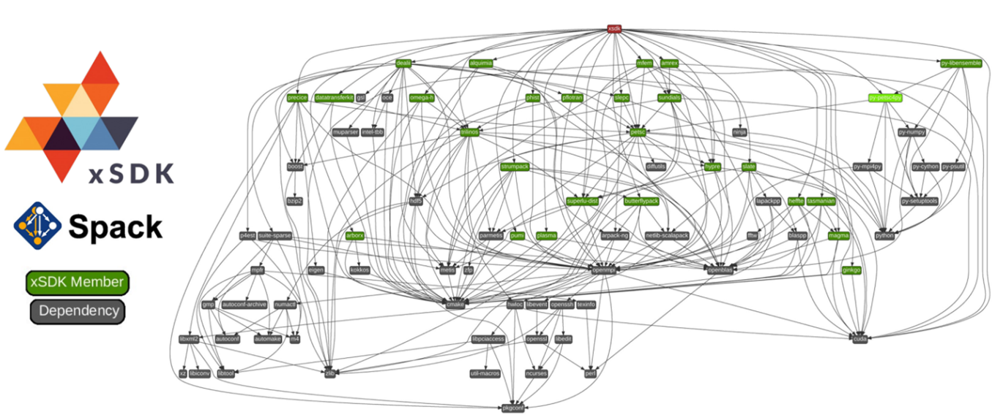

In this module, we will:
- learn about software management
- discuss package managers
- discuss conda as a software management solution
- learn how to set up conda
- learn how to create and use our own conda environments
Software Management
Software management is something that is not typically appreciated until it is missing. In your typical day-to-day computing tasks, software management is an automatic background process, and generally this is how we want things to be.
When performing research computing tasks, however, you may run into situations when this automatic background handling of software requirements is not sufficient. You may have very specific version requirements, or you may have disparate (or incompatible!) software needs for different tasks.
Package Managers
We likely all have some experience with software management. I’d like to examine our experience with software management, and promote appreciation for the work that often happens behind the scenes.
A fictional, simple example of a dependency tree

A tangled mess of a dependency tree, for a real academic software package

The Need for Modular Solutions

Here we demonstrate another scenario that we might encounter when trying to manage our software, especially as our list of software requirements becomes increasingly lengthy or increasingly bespoke.
In the figure above, we show what could happen when we try to use a cutting-edge version of our fictional software package ‘Applesauce2’ alongside another package ‘Orange-tools’
Conda
- Broad support for many types of software packages
- Across languages and platforms
- Pluggable - Ability to switch between software environments at will
- Automatically handles software requirements
- A ‘Conda recipe’ is used to list specifications
- Used during environment creation
- Can communicate requirements to others when shared
Allows Us to Manage Our Own Software
For us as users of research software, we’re primarily interested in conda because it grants us the ability to manage our own software. In addition, it provides the immense benefit of providing pluggability to our software management capabilities.
Simplifies Distribution of New Software
When we’re dealing with academic software, a lot of times we’re dealing with software is ‘cutting-edge’ - the developers may be pushing the limits of existing software solutions and run into problems. Often, the develompent of cutting-edge software will find these problems in established libraries, and they will be addressed in tandem with the development of the new cutting-edge software that has flushed out these new edge-cases. This means that we’re often relying on very recent versions, or as we alluded to above, very specific versions of various software dependencies.
The platform allows developers to record a project’s environment in a shareable ‘recipe,’ simplifying the replication of software setups. This streamlines collaboration and ensures that software runs consistently across different machines.
For developers, Conda breaks down software distribution into a few straightforward steps. By defining and packaging an application’s environment, they make it effortlessly accessible, thereby encouraging broader use and facilitating user adoption.
Environments
The environment is what is created by Conda, it is the culmination of the dependency solving and installation completion that conda takes care of during the creation stage. After it is created, it will remain available and can be enabled/disabled at will.
To enable and disable an existing conda environment, we will use the command terms conda activate <environment name> and conda deactivate.
With the environment activated, software is made available, relevant commands become callable, etc., and when it’s deactivated, the software becomes unavailable again.
Quick aside about $PATH - it is one of the tricks that conda uses in order to achieve this pluggable capability that we’ve been talking about. the $PATH environment variable is used to specify and prioritize software locations. We’ll see this in action during our exercises below.
A Couple of Quick Notes
- Conda provides pluggable capability, but it does not offer a high degree of isolation from other software on your system.
- We use ‘Conda’ as a generalized term. There are several variations including ‘Anaconda’ and ‘Miniconda’.
- Anaconda comes pre-bundled with a plethora of common python and data science packages.
- Miniconda starts out as more of a blank slate.
- We will be installing Miniconda and using it in our exercises.
Packages and Channels
We want to get started using Conda fairly quickly and give practical tips for using it in our HPC ecosystem, so we’re not going to cover some of the finer details about how conda creates environments.
We really start to care about these details when we are creating our own conda environments.
There is an excellent online resource here, covering the detailed structure of conda packages and how it works under the hood
Basically, conda packages are bundled up software, system-level libraries, dependency libraries, metadata, etc. into a particular structure. This organized structure allows conda to achieve its package management duties while retaining the beneficial characteristics and capabilities that we enjoy.
Miniconda Installation and Configuration Details
So far we’ve described many of the details of how conda works and how we can use it, both to create new environments and to activate/deactivate them at will. Since we’ll be installing and configuring it during this workshop, we have some notes here that we’ll quickly cover before jumping in.
Miniconda Installation Overview
- We will use the Miniconda installer and each of us will install miniconda to our
$WORKSHOP_HOME directory on Great Lakes.
- Link to Miniconda installation instructions
- Together, we’ll verify the file integrity of the installer and then use it to guide us through the installation process.
Conda Configuration with .condarc Overview
- Condarc file contains configuration details for your conda installation.
- Link to documentation on using condarc
- In our configuration exercise we will set
envs_dirs within our condarc file to a location within our turbo storage.
Exercise - Conda Activate, Make BigWig Files
Following along with instructor, learners will activate an existing environment. We’ll demonstrate addition to the $PATH (and using which). Then, we’ll create a visualization file for sample_A - A BigWig File.
Conda Activate, Make Bigwig - Solution
mkdir filter_viz_conda
srun --pty --job-name=${USER}_bamcoverage_sample_A --account=bioinf_wkshp_class --partition standard --mem=4000 --cpus-per-task=4 --time=00:30:00 /bin/bash
conda activate /nfs/turbo/umms-bioinf-wkshp/workshop/shared-envs/samtools_deeptools/
echo $PATH
which bamCoverage
bamCoverage -b input_bams/sample_A.genome.bam -o filter_viz_conda/sample_A.genome.bigwig
Note: Now we’ll go to https://igv.org/app/ and visualize what this looks like. Select mm10 as genome. Track URL: https://umbioinfcore-workshop.s3.amazonaws.com/sample_A.genome.bigwig
Demonstration - Conda Create
Instructor will demonstrate creating a simple conda environment on the command line.
We’ll then ask about how to create a slightly more complicated conda environment. We’ll start a thread and learners will respond and/or vote on the command that they would use.
Conda Create Demo - Solution
conda search -c bioconda samtools
srun --pty --job-name=conda_create_demo --account=bioinf_wkshp_class --partition standard --mem=2000 --cpus-per-task=2 --time=00:30:00 /bin/bash
conda create -n samtools -c bioconda -c conda-forge samtools=1.20
Exercise - srun and Conda Create
Following along with instructor, we’ll launch an srun job and then create a conda environment in it. After it’s created, we’ll test it by activating and deactivating it. While active, we’ll check things like $PATH and use which to confirm that it’s working as intended.
Conda Create - Solution
srun --pty --job-name=${USER}_conda_create --account=bioinf_wkshp_class --partition standard --mem=2000 --cpus-per-task=2 --time=00:30:00 /bin/bash
conda create -n samtools_deeptools -c bioconda -c conda-forge samtools=1.20 deeptools=3.5
Exercise - Conda Export
Following along with the instructor, we’ll use Conda’s export functionality to create an export - a more complete recipe with all dependencies and their versions fully listed.
Conda Export - Solution
conda activate samtools_deeptools
conda export > ${WORKSHOP_HOME}/project_analysis/conda_envs/export_samtools_deeptools.yaml
Exercise - srun, Conda, Filtering our BAMs
Following along with the instructor, we’ll launch an interactive job with srun. Once we’ve entered the running job, we’ll activate our conda environment and use samtools to filter our BAM file just as we did in the lmod exercises.
srun, Conda, Filtering BAM - Solution
srun --pty --job-name=${USER}_conda_filterbams --account=bioinf_wkshp_class --partition standard --mem=2000 --cpus-per-task=2 --time=00:30:00 /bin/bash
samtools view -o filter_viz_conda/sample_A.chr19.bam input_bams/sample_A.genome.bam 19
Note: Make sure to module list and confirm we’re not using the samtools module - the LMOD module and conda environment would interfere with one another!
Exercise - srun, Conda, Sanity Check and Index BAM
Following along with the instructor, we’ll launch an interactive job with srun. Once we’ve entered the running job, we’ll activate our conda environment and use samtools to perform a sanity check on our filtered BAM files. We’ll also index one of our BAM files - sample_A. This will set us up for the next step.
srun, Conda, Sanity Check, Index BAM - Solution
srun --pty --job-name=${USER}_conda_check_and_index --account=bioinf_wkshp_class --partition standard --mem=2000 --cpus-per-task=2 --time=00:30:00 /bin/bash
conda activate samtools_deeptools
samtools view filter_viz_conda/sample_A.chr19.bam | wc -l
samtools index filter_viz_conda/sample_A.chr19.bam
Exercise - srun, Conda, Creating Bigwigs
Now we’ll create files for visualization of our filtered BAMs, as another way to check our results.
Following along with the instructor, we’ll launch an interactive job with srun. Once we’ve entered the running job, we’ll activate our conda environment and use bamCoverage to create a bigwig file for sample_A.
srun, Conda, Create Bigwig - Solution
srun --pty --job-name=${USER}_conda_bigwigs --account=bioinf_wkshp_class --partition standard --mem=2000 --cpus-per-task=2 --time=00:30:00 /bin/bash
bamCoverage -b filter_viz_conda/sample_A.chr19.bam -o filter_viz_conda/sample_A.chr19.bigwig
Note: Now we’ll go to https://igv.org/app/ and visualize what this looks like. Select mm10 as genome. Track URL: https://umbioinfcore-workshop.s3.amazonaws.com/sample_A.filtered.bigwig
Review
Conda allows us to install and manage our own software. On a multi-user system like Great Lakes, this is very powerful.
Conda is basically a package manager - it is software that manages bundles of other software - but it has additional capabilities that make it great for reproducibility.
It provides pluggability to our software needs. When we need a wide variety of tools at different times, with some being incompatible with one another, this becomes critical.
When given a set of software requirement specifications, Conda handles all of the dependencies and creates a somewhat contained environment that we can activate and deactivate as needed.
